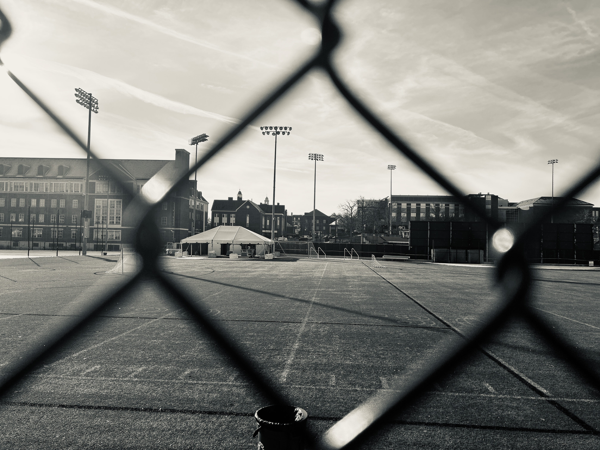

How the Valkyries won the WNBA title in just two years
Chapter Headline
SAN FRANCISCO -- Almost exactly two years ago, Natalie Nakase sat across from Golden State owner Joe Lacob for her job interview to become the head coach of the WNBA's newest team, the Valkyries. It was October 2024, and Nakase had walked into the interview with notes on why she would be the best fit, her vision for how to build a team and what set her apart from her colleagues.
But the first 10 minutes of the conversation were led by Lacob: He told Nakase he likes to set incredibly high goals and shared how he plans to achieve them. Nakase sat up straighter and leaned in a few inches closer, enticed by Lacob's work ethic.
Near the end of the conversation, Lacob told Nakase the ultimate goal, the same one he had shared in the news conference announcing the creation of the team a year earlier: "We're going to win a championship in five years."
She slammed her fists on the table in front of them.
"Hell yeah, we're gonna win a championship," she said.
On Saturday, the Golden State Valkyries did just that, beating the Atlanta Dream 68-63 in Game 7 of the WNBA Finals to win their first title.
Lacob and Nakase were wrong about one thing, though. The Valkyries didn't win their first championship in five years. They did it in two.
"I walked out of that conversation with Joe like, 'I want to work for him,'" Nakase said. "More than that, I want to win that first championship for him."
After the interview, Nakase immediately called her mentors, asking them how she could deliver on Lacob's aspirations. Their biggest piece of advice was to build a clear culture, and do it with competitors who would sacrifice anything for the group.
Along with general manager Ohemaa Nyanin, Nakase set the identity she wanted for her team: scrappy, defensive-minded, no egos. The Valkyries built the team their way, facing external scrutiny nearly every step of the way. People gawked -- or even laughed -- at Lacob's proclamation. But Nakase stood strong in her belief, and in his.
Sitting next to the championship trophy with a beer in her hand Saturday, Nakase was asked if winning the title felt as she imagined it would.
"F--- yeah."
TOGETHER, NYANIN AND Nakase handpicked the players who make up Golden State's roster. During the 2024 expansion draft, the Valkyries acquired Veronica Burton, the gritty two-way guard, and Kayla Thornton, a reigning WNBA champion -- two cornerstones of the franchise -- as well as Cecilia Zandalasini, an Italian national. Tiffany Hayes, a former Sixth Player of the Year, signed in free agency, and Janelle Salaun, a French forward, signed on a training camp roster. The Valkyries used their No. 5 pick in 2025 on Juste Jocyte -- a 19-year-old from Lithuania who stayed overseas that year.
Again, their decisions were questioned. Without a star, and without a history of any success, external expectations for the Valkyries were low.
But in the 2025 postseason, this group made history, propelling the Valkyries to become the first expansion franchise in WNBA history to make the playoffs in its first season. The Valkyries were swept by the Minnesota Lynx in the first round, but it laid the foundation for what the team could build on, and made Golden State an attractive landing place for free agents.
For more than a year, the Valkyries knew whom they wanted to prioritize. Gabby Williams was part of Nyanin's original vision of the team, and Nakase met with Williams in 2025 in Turkey to pitch her on coming to Golden State. But the Seattle Storm cored Williams that offseason, guaranteeing Seattle exclusive negotiating rights with the French national. Williams remembers when she heard Lacob make his proclamation in 2023. "I was impressed, and I was enticed. It was like, this is a team I could want to play for one day," Williams said. "I thought I would finish my career in Seattle, but hearing that made me think a little bit. This guy is not playing around; he wants to win. That was eye-opening to me."
When Williams became a free agent, the Valkyries contacted her again, and Lacob joined Nakase and Nyanin in the recruitment.
"He said, 'This is why we are going to win. This is why it would be silly for you to go anywhere else. This is why we're going to have longevity. I want to build dynasties here,'" Williams said.
"Who doesn't want to come to something like that? We play this game to win championships. I've never won one, and at this point in my career, that is the top priority. ... I was so convinced that I would not win anywhere else."
One day after signing Williams, the Valkyries made another trajectory-shifting acquisition, landing Kiah Stokes after she spent four seasons and won three titles with Las Vegas, where she played alongside A'ja Wilson every day and under Nakase for one year. After Iliana Rupert announced that she would miss the 2026 season due to pregnancy, Stokes started every game, defending Angel Reese in the Finals.
Nyanin knew that these players could unlock a new level of her team. What has surprised the GM, though, is how quickly it has come together.
"You just never know if that's going to work out," Nyanin said.
It has. Williams, who was named Finals MVP thanks to a 30-point performance in Game 7, is having the best season of her career. She averaged a career-best 14.4 points and shot 34.2% from 3 -- and also finished second in Defensive Player of the Year voting and received WNBA All-Defensive first-team honors. She became the engine for Golden State's top-ranked defense, while also stepping up to be the shotmaker the Valkyries needed.
"The best part has been coming to work every day and enjoying it. Like, actually, that's a huge part of contending," Williams said. "When the playoffs started, our motivation was just -- we didn't want to stop playing together. We wanted to go as deep as we could because we knew this is the last time we could have a group like this. It's been really healing for me. It's made this season really special."
Down late in a win-or-go-home Game 3 in the first round against the Dallas Wings, Thornton pulled Burton, Williams and Kaila Charles into a huddle beneath their basket. They put their arms around each other and took a collective breath.
"It's just one of those things where [it was] an awareness of what we need," Burton said. "And in that moment, we needed to take an exhale and be together and just be present. ... That's pouring into each other and building each other up."
As Nyanin watched from the tunnel -- and as that sigh fueled their comeback and offered a glimpse of the composure Golden State, a team with no All-WNBA player selections, has possessed since its inception, Nyanin knew that all of the pieces she put together fit perfectly.
"That was the epitome of things we have said to them here and there," Nyanin said. "In that moment, all of the little things we have put together, I took a breath as well just to say yes, they will fight with each other and for each other. That's exactly why I am doing the job I am doing."

There was no shooting, no running plays, no offense. The first three days of camp were dedicated to defense.
"That's when I knew this was going to be different," Burton said.
Those early sessions set the tone for what Nakase would demand: consistent defensive intensity, attention to detail and execution on the game plan. It also gave her players a taste of the kind of coach she is -- one who plays battle sounds during practice and calls her players "killers," doesn't allow for celebrations, and believes that cursing just means you're telling the truth.
Even when Nakase's behavior seems jarring -- or as she puts it, extreme -- she has built an environment that encourages her players to speak up and feel respected. It's why they so willingly buy into Nakase's vision and style.
"She's so authentic," Williams said. "We know her intentions are to put us in the best position to win. ... She's passionate. And sometimes we laugh at her, but we also check on her ... it's the love we have for each other."
When Williams arrived in Golden State, she told Nakase that sometimes her delivery was confusing. Others have told Nakase that they needed more time to celebrate the smaller wins. Her coaching staff urged her to take more care of herself so she can be a better leader.
All of this experience has led the Valkyries here, to their first title. Nakase's focus on defense made Golden State's unit the top ranked in the league through the regular season -- holding opponents to a league-low 75.1 points per game -- and second best in the playoffs. Stokes had 31 blocked shots this postseason, tied with Lisa Leslie for the most in WNBA history.
And her players' feedback has pushed Nakase to be a better version of herself -- and helped turn around the Finals when Golden State trailed 2-1. After the first three games of the series, she gave herself an F-minus score on her coaching because her communication was poor. So she turned to her players to see how she -- and in turn they -- could be better.
"You can give the best scheme in the world, but if your players don't want to follow it, it's not going to be successful," Stokes said. "Her willingness to listen to us and our ideas about what we think we're best at and what we can do, that's one thing that has jumped out to me; her willingness to adapt to her players."
Heading into Game 4, Nakase inserted Hayes and Kaila Charles into the starting lineup in place of Thornton and Zandalasini, respectively. Charles finished the game with a plus-14, and Hayes added 13 points -- and the change led to a massive momentum shift in the series, with the Valkyries taking the next two games.
"The best thing about our team is no one cares who starts, no one cares," Nakase said. "We can do that because we have a really selfless team, ego-less team."
"She's a great coach for a reason," Charles. "We trust our coach, so whatever she sees, we'll execute."
As Nakase walked out of her first interview with Lacob, she pledged to herself not to let his WNBA team fail. When she began to work alongside Nyanin, she promised her that they wouldn't let each other fail. As she opened up each season with her players, Nakase made sure they had every piece of support they needed.
All of this has led to history, and the Valkyries winning a title far sooner than anyone -- even Lacob -- could have ever predicted.
"Of course this is unbelievable," Lacob said Saturday night as the Valkyries celebrated. "Two years? It's insane."